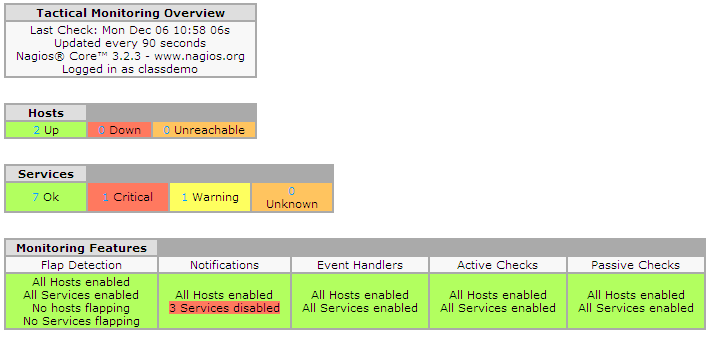

感謝您對「自由軟體鑄造場」的支持與愛護，十多年來「自由軟體鑄造場」受中央研究院支持，並在資訊科學研究所以及資訊科技創新研究中心執行，現已完成階段性的任務。 原網站預計持續維運至 2021年底，網站內容基本上不會再更動。本網站由 Denny Huang 備份封存。
也紀念我們永遠的朋友 李士傑先生（Shih-Chieh Ilya Li）。
也紀念我們永遠的朋友 李士傑先生（Shih-Chieh Ilya Li）。
技術專欄  以 NAGIOS 實作服務監控系統
以 NAGIOS 實作服務監控系統
以 NAGIOS 實作服務監控系統
建立日期 2011-04-21 17:25 最近更新在 2011-04-25 18:28
前言
我想一個稱職的網管人員，確保系統服務不中斷是最基本的職責。
但受限於人力的考量，網管人員不可能 24 小時隨時監控系統服務的運作。當遇到系統服務發生異常時，能即時通知管理者的監控系統，是每個網管人員所迫切需要的。而在開源碼社群中，功能完善的 Nagios 就能幫助網管人員即時監控系統服務的狀態。並在系統服務發生異狀時，以email通知管理者。
所需的套件如下表示：
| 軟體名稱 | 官方網址 | 說明 |
|---|---|---|
| Fedora 11 | https://fedoraproject.org/ | Linux 作業系統 |
| Nagios | https://www.nagios.org/ | 監控系統的主要程式，監控管理者所設定的系統服務，當發現所監控系統服務異常時，即發送 Email 告知管理者 |
| vshell | https://assets.nagios.com/downloads/exchange/nagiosvshell/ | Nagios的 Web 監控介面 |
介紹 Nagios 基本名詞
在開始安裝使用 Nagios 之前，我們先來了解 Nagios 的基本名詞。
- 主機 (Host)：Nagios 監視的主體，只要列入 Nagios 監視清單內的機器均可視為主機的角色。
- 服務 (Service)：這算是主機角色的下層角色，通常一個主機會運作多個服務（如 HTTP、FTP 服務等等，Nagios 可針對某個服務來進行監控）。
- 指令 (Command)：設定用來監控主機、監控服務或通知聯絡人的程式。Nagios 採用 plugin 的方式，可無限擴充監控的能力。
- 聯絡人 (Contact)：設定當所監控的主機或服務發生異常時要通知的聯絡人資訊（可在此設定聯絡人 Email 等相關資訊）。
- 狀態：即是 Nagios 監控回覆的結果。可分為針對主機狀態的回覆，與針對服務狀態的回覆：
- 針對主機部份的狀態，如下所示：
-
-
- OK：主機運作正常，無任何異狀。
- Unreachable：被監控主機無法回應 icmp 指令，通常是網路出問題了，或被監控主機關閉 icmp 的回應。
- UP：主機重新啟動了（通常在主機從關閉到啟動會呈現此種狀態）。
- Down：主機停止運作（除了主機當掉以外，剛加入監控的主機，也會呈現此狀態）。
- 針對服務部份的狀態，如下所示：
- OK：服務運作正常，無任何異狀。
- Warning：服務出現異狀（但是情節輕微是可被忽略的）。
- Critical：服務出現嚴重問題（需要立即處理的情況）。
- Unknown：服務狀態不明（最常見的情況為偵測不到服務）。
-
- 監控期間 (Time Period)：可設定監控的時間區間（如僅在上班時間進行監控）。
安裝 Nagios
接下來進行安裝作業。首先請讀者新增 Nagios 使用者帳號（Nagios 預設執行的權限），再來下載最新版本的 Nagios，接著執行安裝指定。操作如以下步驟：
1. wget https://prdownloads.sourceforge.net/sourceforge/nagios/nagios-3.2.3.tar.gz。
2. /configure –prefix=/usr/local/nagios #設定安裝的目錄為 /usr/local/nagios。
3. make all #編譯 Nagios 。
4. make install #將 Nagios 相關程式安裝在 /usr/local/nagios的目錄下。
5. wget https://prdownloads.sourceforge.net/sourceforge/nagiosplug/nagios-plugins-1.4.15.tar.gz #取得 plugin 相關程式。
6. ./configure --prefix=/usr/local/nagios && make all && make install 編譯並安裝 plugin。
在安裝完成後，讀者可檢查在 /usr/local/nagios/plugins/libexec/ 的目錄下是否有相關的 plugin 程式。例如，以 check_http，檢查 HTTP 服務是否存在。其實，每個 pluign 即為一獨立的程式，讀者可單獨拿來運用。
以下筆者用一小段篇輻，簡單的介紹檢查 check_http 程式的用法，該程式可用於檢查 Web 服務是否存在。check_http 可使用的參數如下所述：
-H：欲監控的網站網域名稱（如 www.example.com ）。
-I：如果無法使用 DNS 服務，即可利用 IP 資訊來進行監控。此選項即是用來輸入欲監控的 IP 資訊。
-p：設定欲監控的埠資訊（預設為 80）。
-u：可直接設定預設監控該網站的 URL 位址，預設為（/根目錄）。
-w：設定警告 (warn) 狀態的回應時間，單位為秒。
-c：設定嚴重錯誤 (critical) 狀態的回應時間，單位為秒。
-t：設定連接測試的時間 (timeout)，預設為 10 秒（即 10 秒內無法跟對方建立連線即判定對方無法連線）。
-P：在測試的過程中，同時以 POST 的方式發出參數資訊。
-r：可以正規表示法 (Regulator express) 設定，來判別網站伺服器是否存在。如首頁的內容含有「資訊安全」字樣，即可設定比對回傳值中含有資訊安全的字樣，才算網站伺服器還存活著，這會比單純測試埠狀態還要精準。
讀者可利用 ./check_http -I xxx.xxx.xxx.xxx 來檢查網站伺服器是否存活。程式的回應會如以下的三種狀況：
１. 正常存活情況：回應資訊會告知 OK 及相關資訊，如回應時間等。
HTTP OK: HTTP/1.1 200 OK - 16770 bytes in 0.005 second response
time |time=0.004792s;;;0.000000 size=16770B;;;0
２. 警告 (warn) 情況：回應資訊會告知 WARNING 及相關資訊，如回應時間等。以下實例是一個需認證方可使用的網站伺服器。
HTTP WARNING: HTTP/1.1 401 Authorization Required - 798 bytes in 0.001 second response time |time=0.000990s;;;0.000000 size=798B;;;0
３. 嚴重 (critical) 情況：回應資訊會告知 critical 及相關資訊，如回應時間等。以下例子是一個已停止運作的網站伺服器的回應訊息。
HTTP CRITICAL - Unable to open TCP socket
設定 Nagios 組態檔
接下來，我們繼續設定 Nagios 組態檔。在此以設定監控一個網站伺服器為例，讀者可從 sample-config 目錄下取得相關組態檔的範例，並複製到 /usr/local/nagios/etc 的目錄下。相關組態檔設定如下所述：
* nagios.cfg：Nagios 的主要組態檔，設定方式條列如下。
cfg_file=/usr/local/nagios/etc/localhost.cfg #在此檔設定主機及服務等相關資訊
cfg_file=/usr/local/nagios/etc/commands.cfg #在此檔設定查指令的參數
cfg_file=/usr/local/nagios/etc/contacts.cfg #在此檔定義聯絡人的相關資訊
cfg_file=/usr/local/nagios/etc/timeperiods.cfg #在此檔定義監控的時間區間
cfg_file=/usr/local/nagios/etc/templates.cfg #在此檔設定相關行為的樣版，可利用樣版方式來減低規則設定的複雜性
log_file=/usr/local/nagios/log/nagios.log #設定 Nagios 的log資訊存放的檔案位置
resource_file=/usr/local/nagios/etc/resource.cfg #設定相關的資源檔位置
status_file=/usr/local/nagios/log/status.dat #設定儲存 Nagios 的偵測結果檔案，在本方案中所使用的web程式即是解析此檔案來取得相關的結果，並顯示在網頁上
status_update_interval=10 #設定 Nagios 偵測結果狀態更新的時間區隔，以秒為單位，此例即為 10 秒更新一次
nagios_user=nagios #Nagios 執行時所使用的身份
nagios_group=nagios
use_syslog=1 #設定也使用 syslog 機制，同時會將 Nagios 的相關 log 資訊寫入 messages 檔案中
log_service_retries 1 #Nagios 系統服務容錯機制，可設定需重試幾次偵測服務異常後，才判定服務 (service) 失敗而寫入 log 檔案中
log_host_retries=1 #Nagios 主機服務容錯機制，可設定需重試幾次偵測主機異常後才判定主機 (service) 異常而寫入 log 檔案中
lock_file=/tmp/nagios.pid #設定 Nagios 執行時，儲存 PID 資訊的檔案位置
temp_file=/tmp/nagios.tmp #設定 Nagios 執行時，暫存檔案的檔案位置
temp_path=/tmp #設定 Nagios 執行時，暫存檔案的目錄位置
* templates.cfg：是設定相關行為的樣版，以供相關的主機服務或系統服務來套用，以下以定義 Linux 主機及 HTTP 服務為例。
define host{ ; 定義此為主機服務的樣版
name linux-server ; template 樣版的名稱
use generic-host ; 繼承 generic-host 樣版的特性
check_period 24x7 ; 設定每天 24 小時的監控
check_interval 5 ; 設定每 5 分鐘重新檢查一次
retry_interval 1 ; 設定如果檢查失敗，隔一分鐘即重新檢查一次
max_check_attempts 10 ; 設定如果重新檢查超過 10 次即判定為主機當掉
check_command check-host-alive ; 設定檢查主機是否存在所使用的程式
notification_period workhours ;
notification_interval 120 ; 設定每兩個小時，重新寄送通知給管理者
notification_options d,u,r ; 設定當主機符合相關狀態時，才寄發通知，告知管理者；u = 當主機為無法連線時（UNREACHABLE，常見原因為網路中斷）即通知管理者；r = 主機重新啟動成功後，通知管理者；f = 當主機啟動或停止時，通知管理者；n = 不管主機在任何情況下，均不通知管理者
contact_groups admins admin; 當監控到主機異常時所要通知的管理者，在此為通知位於 admin 群組的人員，管理者相關資訊定義在 contact.cfg 檔案中
}
define service{ ;定義系統服務的樣版
name generic-service ; 樣版的名稱
active_checks_enabled 1 ; 接受主動檢查功能，1 表示啟用
passive_checks_enabled 1; 接受被動檢查功能
parallelize_check 1 ; 開啟平行處理的功能
obsess_over_service 1; 是否啓用主機操作系統探測，check_freshness 0; 停用 freshness 功能，freshness 僅用於被動測試模式的主機而言的，其作用是定期檢查該主機報告的狀態信息，如果該狀態信息已經過期，freshness 將會強制作主機檢查。
notifications_enabled 1; 當服務發生異常時，需發出通知給管理者
contact_groups admins ; 通知管理者的資訊，定義在conact.cfg
event_handler_enabled 1; Service event handler is enabled
flap_detection_enabled 1; 啟動是否需偵測 flap 現像，flap 指的是網路不斷的的離線及上線，就像拍翅一樣
check_period 24x7; 檢查時間區間為全年無休 (7*24)
max_check_attempts 3 ; Nagios 的容錯機制，如果偵測服務失敗三次，才判別服務失敗
normal_check_interval 10; 檢查的時間區隔(單位為分)，本例即為每 10 分鐘偵測一次
retry_check_interval 2; 檢查服務失敗後，重新檢查的時間區間，在本例為檢查服務失敗後，在隔兩分鐘後再重新檢查
notification_options w,u,c,r; 設定要發通知告知管理者的事件等級，其中 w 為 warning 等級，u 為 Unknown 等級，c 為 critical 等級，r 為 recovery 等級
notification_interval 60; 通知發送的時間區隔（單位為小時）
notification_period 24x7; 通知發送的時間，在本例即為 24 小時均可發送通知給管理者
* localhost.cfg：設定欲監控的主機及服務等相關資訊。設定如下所示。
define host{ #設定主機服務
use linux-server #採用 linux-sever 的樣版
host_name http-xxx-xxx-xxx #設定主機名稱
alias fedro 9 #設定別名
address xxx.xxx.xxx.xx #設定此主機的 IP
}
define service{ #設定系統服務
use local-service #使用 local-service 的樣版
host_name http-xxx-xxx-xxx #設定主機名稱，需與 host 設定對應，即表示此服務為所設定主機名稱的服務
service_description HTTP #描述服務
check_command check_http #偵測用的程式，在這裏使用 check_http
notifications_enabled １ #設定當服務異常時，通知管理員
check_period 24*7 #監控的時間為全天候 24 小時（24*7 定義在 timeperoid.cfg 檔案中)
}
*commands.cfg：用來定義指令的行為，需將程式所需的參數設定於此檔案中。
define command{
command_name check_http #程式名稱
command_line $USER1$/check_http -I $HOSTADDRESS$ $ARG1$ #參數資訊，其中 $USER1$ 等變數內容定義在 resource.cfg
}
*contacts.cfg：定義聯絡人的相關資訊。
define contact{
contact_name nagiosadmin; 設定連絡人名稱
use generic-contact ; 使用 generic-contact 的樣本(已定義在 template.conf 中)
email 這個 E-mail 地址已經被防止灌水惡意程式保護，您需要啟用 Java Script 才能觀看 ; 定義連絡人的 email
}
*timeperiods.cfg：定義規則有效的時間區間資訊。
define timeperiod{
timeperiod_name 24x7 #樣版的名稱
alias 24 Hours A Day, 7 Days A Week #別名
sunday 00:00-24:00 #定義星期一至星期日的監控有效時間
monday 00:00-24:00
tuesday 00:00-24:00
wednesday 00:00-24:00
thursday 00:00-24:00
friday 00:00-24:00
saturday 00:00-24:00
}
* resource.cfg：定義相關變數的資源。
$USER1$=/usr/local/nagios/plugins/libexec/ #定義 $USER1$ 變數內容
$USER2$=@libexecdir@/eventhandlers #定義 $USER2 變數內容
在設定完成組態檔後，讀者可利用 Nagios –v 來驗證組態檔的參數設定是否正確。如果一切設定無誤，即可啟動 Nagios 監控主程式。請讀者依序下達下列指令：
chown nagios:nagios /usr/local/nagios/ #重設 Nagios 安裝目錄下的檔案權限，以避免權限問題
/usr/local/nagios/bin/nagios -d /usr/local/nagios/etc/nagios.cfg #以 daemon 方式啟動
安裝 Web 顯示狀態介面軟體
Vshell 是 Nagios 所提供的 Web 介面軟體（以 PHP 語言實作），可即時的查看所監看的主機或系統服務的目前狀態。安裝過程相當簡單，請讀者至下列網址取得最新版本的 vshell：
https://assets.nagios.com/downloads/exchange/nagiosvshell/vshell.tar.gz
下載網頁程式後，直接將程式拷貝至網頁根目錄，並修改 constants.inc.php 內的 STATUSFILE 等相關資訊（需調整成與 nagios.cfg 所設定 status_file 的值一致）如下所示：
define("STATUSFILE", "/usr/local/nagios/log/status.dat");
# Nagios 會將監控結果寫入 staus.dat，而 vshell 即是讀取此檔內容並在網頁上顯示出來 define("OBJECTSFILE", "/usr/local/nagios/log/objects.cache");
define("CGICFG", "/usr/local/nagios/etc/cgi.cfg");
安裝完成後，以瀏覽器瀏覽應可看到如下圖的監控畫面。

▲圖1
至此，一個完整的服務監控系統已完成。
結論
維持主機服務的運作，是每個網管人員最基本的職責。而 Nagios 應算是監控系統中最適當的解決方案，沒有華麗的介面，只是簡單明確的告知主機服務目前的存活 (alive) 狀態。最令筆者激賞的是所提供的 plugin 程式均是單獨可執行的程式，只要具備一點程式設計能力，即可讓網管人員很方便的嵌入自行開發的軟體中，以建立一套符合自己環境的監控系統。
專欄總覽


自由軟體鑄造場 製作 最佳瀏覽狀態：IE7或Firefox2.0以上 (建議使用Firefox) ‧ 解析度1024*768
E-Mail：contact@openfoundry.org Address：台北市南港區研究院路2段128號 中央研究院資訊科學研究所 . 隱私權條款. 使用條款
E-Mail：contact@openfoundry.org Address：台北市南港區研究院路2段128號 中央研究院資訊科學研究所 . 隱私權條款. 使用條款